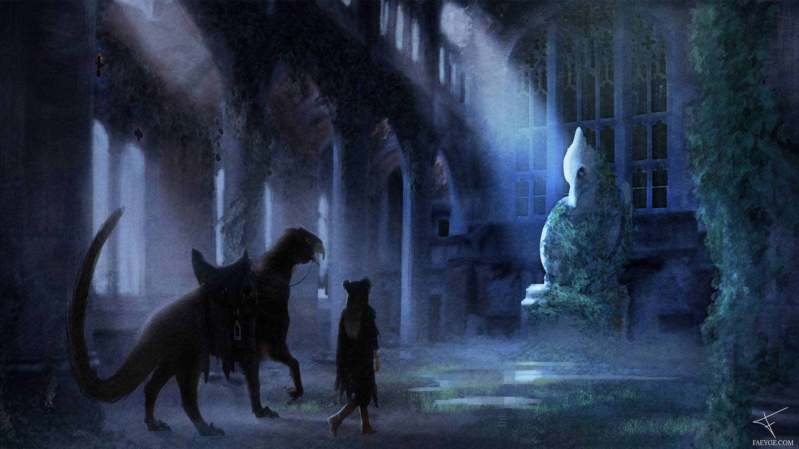

The Statue
The final production painting that was part of the Heart Hunters Project; The wide shot. So far, this might be my personal favorite to work on.
In this particular painting, I wanted to show off the inside of the church that is used for the turning rituals. Both the Protagonist and her creature mount enter the ruin to prepare themselves for the next hunt. The statue belongs to a long forgotten religion.